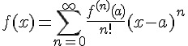
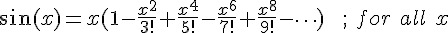
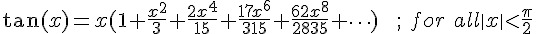
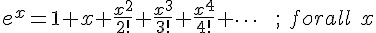
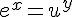

泰勒级数 (Taylor series) (作者：Bridan)
許多代數式都可以表示為

這稱之為 泰勒級數 展開，如果 a = 0，則改稱為馬克勞林級數展開 (Maclaurin series)

如果缺少了這些級數展開，許多電腦數學函數就會計算不出來，在對數一文有一計算式

其實它就是一種級數展開，如果電腦要計算三角函數或自然指數，就需要下列算式求值




如果想計算任意值 u 求其任意次方 y，可令


再求解級數和
(本文來自「研發養成所」 Bridan 的網誌，原文網址為 http://4rdp.blogspot.tw/2014/07/taylor-series.html ，由陳鍾誠編輯後納入程式人雜誌)